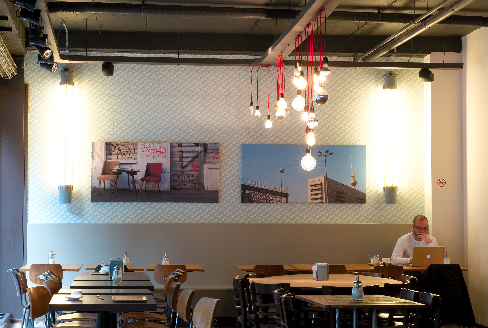

コンセプト

まったりゆったり"自由な空間" 会社の休憩時間などに心を安らげる場所。自由な区間で羽を伸ばしてほしい
コンセプト
コンセプトは脱日常感。 大正時代をモチーフにしたシックなインテリアと、静かに流れるクラシック音楽が落ち着いた大人の雰囲気を醸し出します。
店内

店内に一歩足を踏み入れると、そこは大正ロマンの趣。東郷青児のB0サイズの絵画、高級感溢れるインテリアや素材を利用した演出。入店前の期待は入店後にも裏切られません。ゆったりと流れる時間の中で、贅沢な時間をお過ごし下さい。